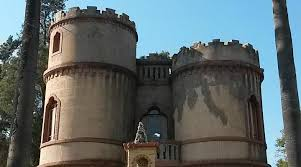

Jesús María · Córdoba
Turismo Jesús María
Descubre la historia y cultura de nuestra ciudad a través de sus museos y monumentos históricos.
Nuestros Museos

Museo de la Ciudad Luis Biondi
Una casona histórica que alberga el patrimonio documental y cultural de Jesús María. Exposiciones permanentes y temporales.
Ingeniero Olmos 453
Mié-Dom: 15:00-19:00 | Sáb: 10:00-12:00 y 15:00-19:00

Torre Céspedes
Monumento histórico y museo que narra la historia de Jesús María desde la época colonial hasta nuestros días.
Plaza 25 de Mayo
Horarios variables - Consultar agenda
Galería



Información y Contacto
Teléfono
(03525) 443760
WhatsApp: +54 9 3525 539012
turismo@jesusmaria.gov.ar
Ubicación
Museo de la Ciudad: Ingeniero Olmos 453
Torre Céspedes: Plaza 25 de Mayo
Jesús María, Córdoba
Web
www.jesusmaria.tur.ar